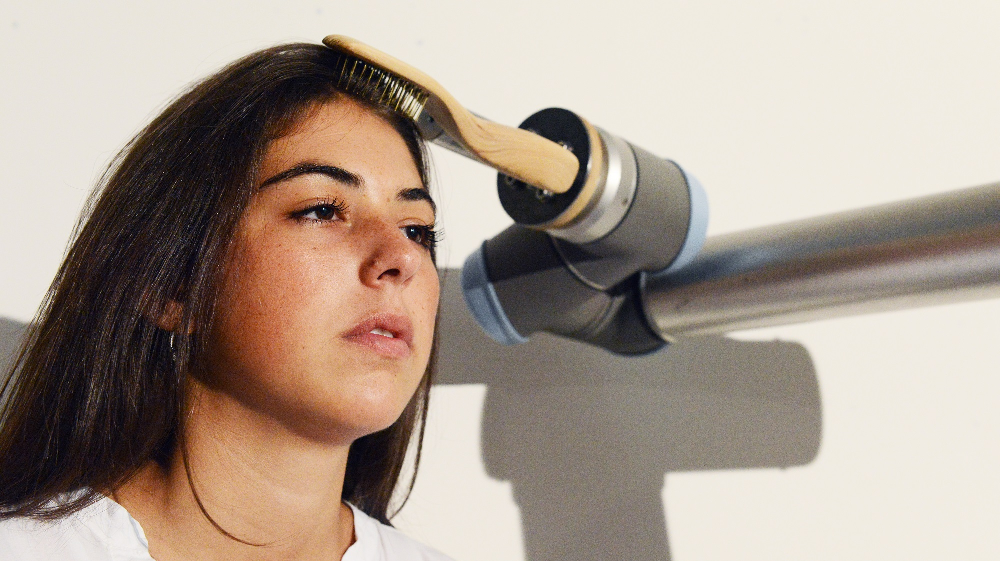

“We are lonely but fearful of intimacy. Digital connection and sociable robots may offer the illusion of companionship without the demand of friendship” Sherry Turkle_
Robots are the most sophisticated breed of tools that human can make use of. They are both a cognitive and a physical aid that in some aspects can outperform our skills. What becomes then the very deep meaning of companionship with technological devices and the digital world in general? About us is a human-robot ritual of a typical day routine.
how it started
During my studies at the Bartlett School of Architecture, I particularly focused on that take active part in our every day lives. We are sourrounded by technological devices and digital networks, yet .
Is there a way to give technological devices ? Is there a need for such a thing? Would that make us feel better? With these never answered question I turned to in order to better comprehend the topic of agency.
Soon it seemed to me that the focus of my research should have been put on of these electronic companions, as a sine qua non condition for engagement with humans. From there, I built where I tried to replicate human behaviours, with the use of puppetry.
The studies involved designing and programming small robots showing and more.
the aesthetics of robots
The last part of my research investigated the role of in designing human-robot systems. Going beyond paradigms of antromorphism, how does the aesthetics of robots ?
The following sketch shows a - using a fake robot with familiar utensils: a spoon, a tissue and a glass.
How to bring it to the next level? I managed to get my hands on a - a perfect body for a set of utensils (or end-effectors).
So I started to craft different tools, choosing a language that was against the usual design choices in consumer electronics and robotics. I used .
final result
In the end, I pointed out a single ritual that was fascinating to me if explored on a human-robot level: . Four tools were needed: .
The robotic arm UR-10 was equipped with magnets to during the ritual. It could then become a , in which the robot became a conversational piece.
About us is definitively a project, where I let myself free to explore and pursue bold ideas. Theatre blends with design and with robotics in a . Many have associated the result with Chaplins' Modern Times scene of the corn eating machine, which I take as a true compliment.
That's how I graduated from the Bartlett School of Architecture .
Behind the scenes
developed individually at Interactive Architecture Lab, Bartlett School of Architecture, London pretty much all - from concepting, to programming robots, to sculpting wood, to video editing Ruairi Glynn, Yuri Suzuki Luca Giacolini, Bartlett School of Architecture Chalevet Visner, Adi Meyer, Arianna di Pasquale